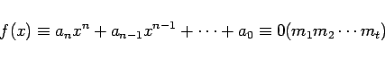
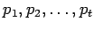

Inhalt Index DeskTop Bronstein

 Algebra und Diskrete Mathematik Elementare Zahlentheorie Kongruenzen und Restklassen
Algebra und Diskrete Mathematik Elementare Zahlentheorie Kongruenzen und Restklassen


Sind  paarweise teilerfremde Zahlen, dann ist die Kongruenz
paarweise teilerfremde Zahlen, dann ist die Kongruenz
|  | (5.281a) |
dem System
| (5.281b) |
äquivalent. Ist kj die Anzahl der Lösungen von für  , dann ist die Anzahl der Lösungen von Man kann also die Lösung von Kongruenzen
, dann ist die Anzahl der Lösungen von Man kann also die Lösung von Kongruenzen
| (5.281c) |
wobei  Primzahlen sind, auf die Lösung von Kongruenzen  zurückführen. Diese wiederum lassen sich wie folgt auf Kongruenzen vom Primzahlmodul p zurückführen:
zurückführen. Diese wiederum lassen sich wie folgt auf Kongruenzen vom Primzahlmodul p zurückführen:
 |
(5.282a) |
Setzt man t1=t1'+pt2 in x=x1+pt1 ein, dann erhält man Man ermittelt nun die modulo p2 eindeutig bestimmte Lösung t2' der linearen Kongruenz
 |
(5.282b) |
und erhält durch Einsetzen von t2=t2'+pt3 in daß x=x3+p3t3 gilt. Durch Fortsetzung des Verfahrens erhält man die Lösung der Kongruenz 
| Beispiel |
|
Es ist die Kongruenz zu lösen. Aus folgt |